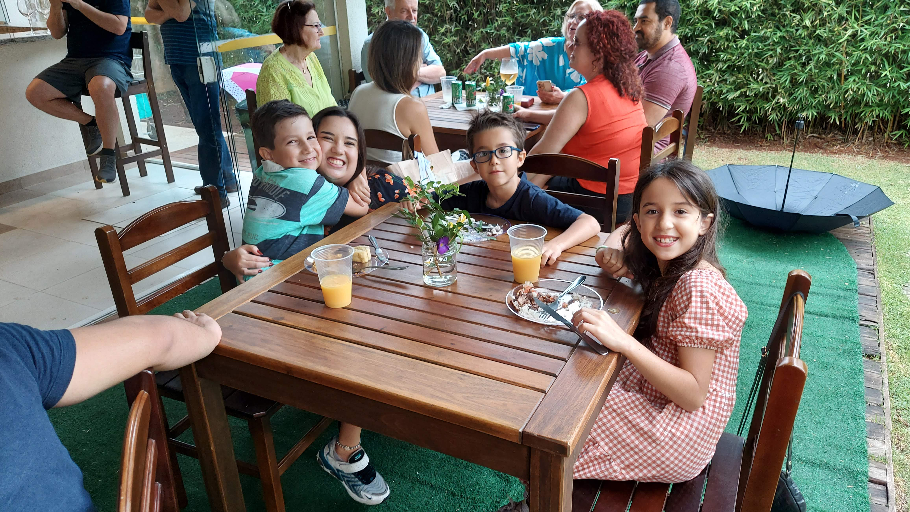

Fevereiro 2024
Alegria em Família
Durante as férias de verão, Lucas organizou uma grande brincadeira no quintal com sua irmã Rebeca e seus primos Ester e Noah. Ele criou um circuito de obstáculos usando almofadas, cadeiras e corda. Foi uma tarde repleta de risadas, corrida e muita diversão em família. Todos se divertiram tanto que pediram para repetir no dia seguinte!